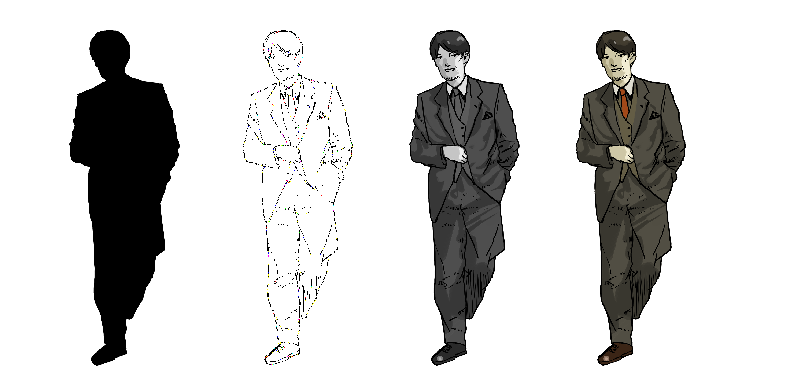

спрямованість у штучне, призначене для того, щоб передати відчуття думки, але не форму чи зовнішні атрибути. Як правило, народжується на початковій стадії розвитку проекту та переслідується мета використання у фільмах, комп'ютерних іграх, коміксах до створення фінальної версії
це процес розробки математичного представлення будь-якої тривимірної поверхні об'єкта за допомогою спеціалізованого ПЗ.
це процес візуалізації ігрового 3D-об'єкта або сцени за допомогою спеціальної комп'ютерної програми. Важливо відзначити, що в процесі рендерингу отримують 2D-зображення або, іншими словами, просту картинку.
Концепт-арт - це той етап роботи, коли ідею, описану словами, художник повинен втілити візуально. Простіше кажучи, намалювати чи замоделювати. Швидкі скетчі дозволяють розглянути різні варіанти та відсікти безперспективні рішення на ранніх етапах виробництва (передпродакшн) і визначити, який напрямок варто розвивати. Вибрані начерки потім опрацьовуватимуться, деталізуватимуться і запускатимуться у виробництво.
Концепт-арт застосовується у багатьох галузях візуального мистецтва: кіноіндустрія, анімація, геймдев, реклама комікси тощо. Він допомагає розробникам у найкоротші терміни сформувати та візуалізувати ідею. Часто для того, щоб створити бажаний образ, розробка одного й того самого персонажа, об'єкта або локації доручається різним художникам.
Ця робота проводиться на початку проекту. Але саме на цьому етапі створюються образи, які завдяки роботі решти команди знаходять життя на екрані. Чим краще концептер розуміє свої завдання та володіє необхідними інструментами, тим більш затребуваним він стає. Отримуючи в такий спосіб можливість взяти участь у великих міжнародних проектах.
Концепти персонажів. Художник, який працює в цьому напрямку, здійснює пошук візуального образу героя. Йому потрібно відобразити характер та емоції персонажа, продумати його костюм та характерні пози. Це актуально як для дитячих мультфільмів, так і для голлівудських блокбастерів та AAA-ігор. Найбільше концепт-художників пррацюють в графічному середовищі "Photoshop"
Цифрова скульптура (скульптурне моделювання або 3d-скульптинг) — вид образотворчого мистецтва, твори якого мають об'єм і виконуються за допомогою спеціального програмного забезпечення, за допомогою якого можна проводити різні маніпуляції над 3d-моделями, як би скульптор працював над звичайною глиною або каменем
Використання в програмах для цифрової скульптури різних інструментів може змінюватись; у кожному пакеті є свої переваги та недоліки. У більшості інструментів для моделювання цифрової скульптури застосовується деформація поверхні полігональної моделі, завдяки чому її можна зробити опуклою або увігнутою. Цей процес чимось схожий на карбування металевих пластин, поверхню яких деформують для отримання необхідного візерунка та рельєфу. Інші інструменти працюють за принципом воксельної геометрії, об'ємність яких залежить від піксельного зображення. У цифровій скульптурі, як і в роботі з глиною, можна нарощувати поверхню, додаючи нові шари, або навпаки, знімати зайве, стираючи шари. Всі інструменти по-різному деформують геометрію моделі, що полегшує та робить багатшим процес моделювання. Ще одна особливість цих програм полягає в тому, що в них зберігаються кілька рівнів деталізації об'єкта, завдяки чому можна легко переходити з одного рівня на інший, редагуючи модель. Якщо змінити поверхню моделі на одному рівні, то ці зміни торкнуться інших рівнів, так як всі рівні взаємопов'язані. Різні області моделі можуть мати полігони різної величини, від невеликих до дуже великих, залежно від того, в якій ділянці моделі вони розташовані. Різного роду обмежувачі (маски, заморожування поверхні та інших.) дозволяють редагувати поверхні, не торкаючись і деформуючи поблизу зон.
Основною особливістю воксельної геометрії є те, що вона забезпечує повну свободу над поверхнею, що редагується. Топологія моделі може постійно змінюватися в процесі її створення, матеріал можна додавати, деформувати та видаляти, що значно полегшує роботу скульптора з шарами та полігонами. Однак ця технологія створює обмеження під час роботи з різними рівнями деталізації. На відміну від стандартного моделювання, у вокселі зміни, внесені в геометрію моделі більш низькому рівні деталізації, можуть повністю знищити дрібні деталі більш рівні. Працювати над цифровою скульптурою можна з використанням як трьохкнопкової або стандартної миші, так і з графічним планшетом, що збільшує можливості скульптора, дозволяючи йому буквально малювати свої скульптури, створюючи більш плавні та різні за товщиною лінії та деформації. Монітор-планшет у багато разів збільшує швидкість роботи над скульптурою завдяки сенсорному дисплею та простоті поводження з моделлю.
3D-скульптура — це ще молода технологія моделювання, що набирає обертів, але незважаючи на це, за порівняно короткий час вона завоювала велику популярність у всьому світі. Особливість цифрової скульптури полягає в тому, що вона дозволяє створювати моделі з високим рівнем деталізації (десятки та сотні мільйонів полігонів), що поки що недосяжно традиційними методами 3d-моделювання. Це робить її найкращим методом для отримання фотореалістичних сцен і моделей. В основному цифрова скульптура використовується для моделювання високополігональних, органічних 3d-моделей, які складаються з викривлених поверхонь з великою кількістю великих та дрібних деталей. В даний час, програми для цифрової скульптури часто використовують для поліпшення та ускладнення зовнішнього вигляду низькополігональних моделей, що використовуються в комп'ютерних та відеоіграх, за рахунок створення різноманітних карт нерівностей. Поєднуючи грубі 3d-моделі з текстурними картами, картами нормалей та заміщення, можна значно покращити зовнішній вигляд ігрових рівнів та персонажів, досягаючи високого ступеня реалізму комп'ютерної гри та заощаджуючи ресурси комп'ютера. Деякі скульптори, що працюють у таких програмах як Zbrush та Mudbox, часто поєднують процеси моделювання з традиційними 3d-програмами з метою більш якісної візуалізації та додання додаткових ефектів для моделі (наприклад, волосся та вовни). Такі програми як 3ds Max, Maya і Modo включають деякі елементи і прийоми роботи з моделлю, схожі на інструменти в програмах для цифрової скульптури, але значно поступаються останнім. Високополігональні скульптури знайшли широке застосування у художніх та фантастичних фільмах, у мистецтві, у промисловому дизайні. Вони також використовуються у створенні прототипів, фотореалістичних ілюстрацій та для створення реальних скульптур у 3d-друку.
Міш або сітка - цими термінами називають сукупність вершин, ребер та полігонів, які становлять один 3D об'єкт. Слово міш походить від англійського mesh - осередок мережі. А слово сітка - від англійського wireframe, що перекладається як каркас/дротяний каркас. Також іноді ще використовую термін геометрія, який по суті означає те саме, що і меш. Справа в тому, що слово geometry (геометрія) з англійської мови перекладається ще й як форма.
Топологія - це те, як саме полігони формують 3D модель. Правильна топологія служить двом цілям: правильні деформації під час анімації; використання мінімальної кількості полігонів для опису потрібної форми.
UV-перетворення або розгортка у тривимірній графіці (англ. UV map) - це відповідність між координатами на поверхні тривимірного об'єкта (X, Y, Z) та координатами на текстурі (U, V). Значення U та V зазвичай змінюються від 0 до 1[1]. Розгортка може будуватися як вручну, так і автоматично – наприклад, у 3Ds Studio MAX є кілька алгоритмів автоматичного розгортання моделі.
Сучасне тривимірне апаратне забезпечення вважає, що UV-перетворення в межах одного трикутника є афінним - тому достатньо встановити U і V для кожної вершини кожного з трикутників. Втім, як саме стикувати трикутники один з одним, вибирає 3D-моделер, і вміння будувати вдалу розгортку – один із показників його класу. Існує кілька показників якості розгортки, що суперечать один одному:
Найповніше використання площі текстури. Втім, залежно від розриву між «мінімальними» та «максимальними» системними вимогами, по краях розгортки текстурі потрібен певний «припуск» на генерацію менших текстур.
Відсутність областей із недостатньою чи надмірною деталізацією текстури.
Відсутність областей із зайвими геометричними спотвореннями
Подібність до стандартних ракурсів, з яких зазвичай малюється або фотографується об'єкт, спрощує роботу художника за текстурами.
Вдало розташовані шви — лінії, що відповідають одному ребру, але розташовані в різних місцях текстури. Шви бажані, якщо є природний «розрив» поверхні (шви одягу, кромки, зчленування тощо), і небажані, якщо таких немає. У моделюванні персонажів Dota 2 брали участь любителі з усього світу, і посібник з моделювання вимагало, щоб очі були окремим «острівцем» розгортки.
Для частково симетричних об'єктів: вдале поєднання симетричних та асиметричних ділянок розгортки. Симетрія підвищує деталізацію текстури та спрощує роботу художника за текстурами; асиметричні деталі "оживляють" об'єкт.
Текстура - растрове зображення, що накладається на поверхню полігональної моделі для надання їй кольору, фарбування або ілюзії рельєфу. Приблизно використання текстур можна легко подати як малюнок на поверхні скульптурного зображення. Використання текстур дозволяє відтворити малі об'єкти поверхні, створення яких полігонами виявилося б надмірно ресурсомістким. Наприклад, шрами на шкірі, складки на одязі, дрібне каміння та інші предмети на поверхні стін та ґрунту.
Якість текстурованої поверхні визначається текселями - кількістю пікселів на мінімальну одиницю текстури. Оскільки сама по собі текстура є зображенням, роздільна здатність текстури та її формат відіграють велику роль, яка згодом позначається на загальному враженні від якості графіки у 3D-додатку.
Рендеринг або малювання (англ. rendering - «візуалізація») - термін у комп'ютерній графіці, що означає процес отримання зображення за моделлю за допомогою комп'ютерної програми. Тут модель - це опис будь-яких об'єктів або явищ строго певною мовою або у вигляді структури даних. Такий опис може містити геометричні дані, положення точки спостерігача, інформацію про освітлення, ступінь наявності якоїсь речовини, напруженість фізичного поля та ін.
Прикладом візуалізації можуть служити радарні космічні знімки, що у вигляді зображення дані, отримані за допомогою сканування радіолокацій поверхні космічного тіла, в діапазоні електромагнітних хвиль, невидимих людським оком. Часто в комп'ютерній графіці (художній та технічній) під рендерингом (3D-рендерингом) розуміють створення плоскої картинки - цифрового растрового зображення - за розробленою 3D-сценою. Синонімом у цьому контексті є візуалізація. Візуалізація - один з найважливіших розділів у комп'ютерній графіці, і на практиці він тісно пов'язаний з іншими. Зазвичай програмні пакети тривимірного моделювання та анімації включають також і функцію рендерингу. Існують окремі програмні продукти, які виконують рендеринг.
Залежно від мети, розрізняють рендеринг, як досить повільний процес візуалізації, що використовується в основному при створенні відео, наприклад Vegas Pro, і рендеринг в режимі реального часу, наприклад, в комп'ютерних іграх. Останній часто використовує 3D-прискорювачі. Комп'ютерна програма, що виробляє рендеринг, називається рендер (англ. render) або рендерер (англ. renderer).
.png)